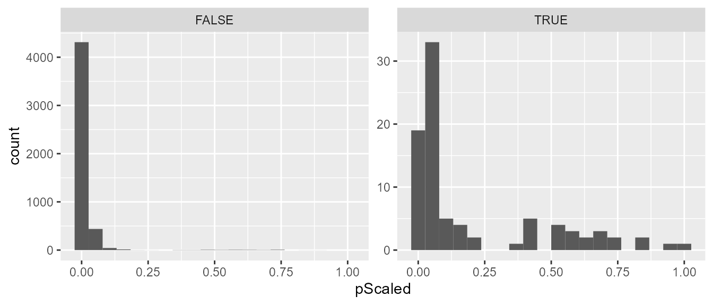
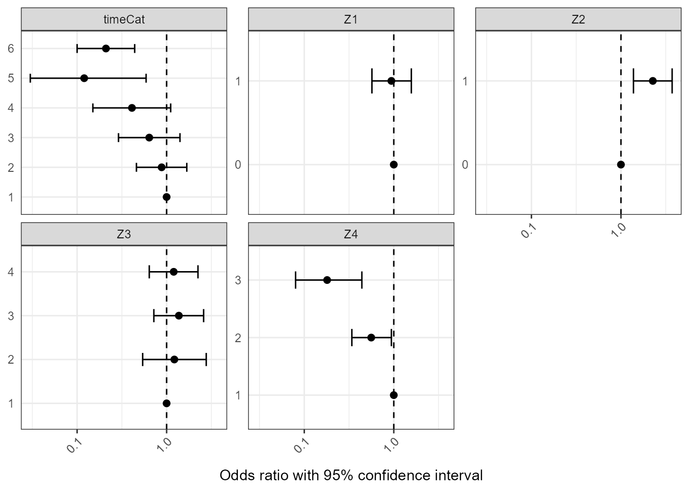
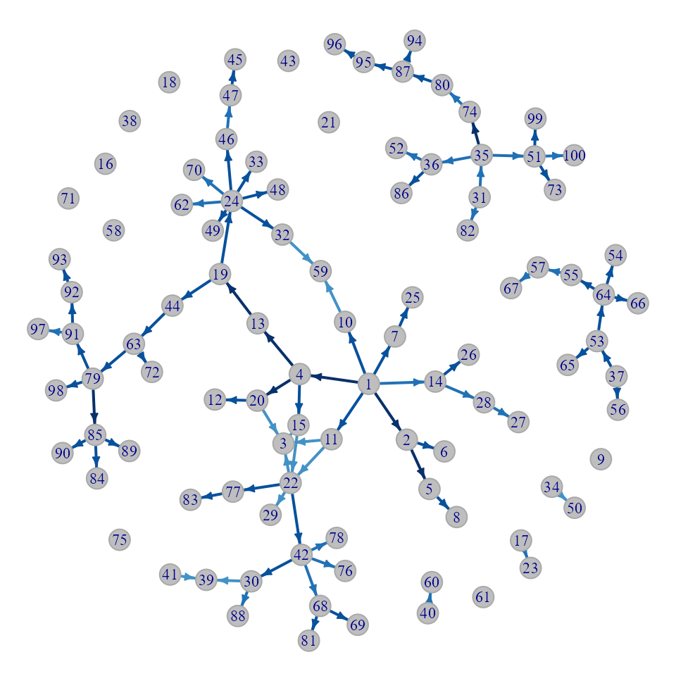
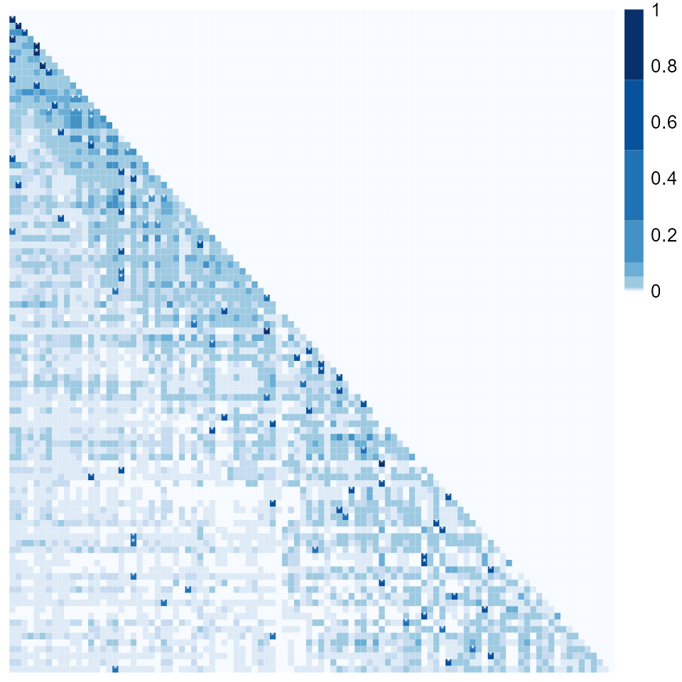

Introductory tutorial for R Package nbTransmission
Sarah V. Leavitt
2020-06-30
Source:vignettes/nbTransmission-vignette.Rmd
nbTransmission-vignette.RmdIntroduction
This will walk you through how to use the package nbTransmission to analyze an infectious disease outbreak. You want to start by installing nbTransmission if you have not already done so using:
devtools::install_github('sarahleavitt/nbTransmission')
Then you can load the package by running:
library('nbTransmission')
If you want the results to match this tutorial, set your seed to match:
set.seed(0)
This package implements an algorithm that takes a dataset of ordered possible infector-infectee pairs from an infectious disease outbreak or outbreak cluster and estimates the relative probability the cases are linked by direct transmission using a classification technique called naive Bayes (NB).
Naive Bayes is a simple and popular machine learning algorithm that uses Bayes rule to estimate the probability of an outcome in a prediction dataset given a set of covariates from the observed frequencies in a training dataset. It is a two step process:
- Determine the association between the outcome and the covariates in a training dataset where the outcome is known.
- Estimate the probability of the outcome given the covariates in a prediction dataset where the outcome is not known.
In this context, a subset of cases with pathogen whole genome sequence (WGS) or contact investigation data serve as the training dataset and the outcome is if the pair is “linked” by one or both of these metrics which is a proxy for being linked by direct transmission. The covariates can be any categorical variables and could represent spatial, clinical, demographic, and temporal characteristics of the cases. The goal is to use these covariates to predict the probability that pairs are linked even when we do not have any WGS or contact data.
Because the outcomes in the training set represent probable and not certain transmission events and a given case could have mulitple probable infectors, we use an iterative estimation procedure. This procedure randomly chooses one link of all of the possible links to include in the training dataset multiple times, and then uses mxn cross prediction to give all pairs a turn in the prediction dataset.
Creating a Dataset of Pairs
Lets say you have a dataset of individuals from an outbreak. We are going to use a simulated dataset called indData included in the package. This dataset has 100 individuals and contains an ID column, a column with the true infector (because this is simulated data so we know the truth), the infection date and time, the sampling date and time, and four covariates (X1-X4). The covariates are artificial but were designed to resemble some possible covariates in real applications.
data(indData) str(indData) #> 'data.frame': 100 obs. of 8 variables: #> $ individualID : num 1 2 3 4 5 6 7 8 9 10 ... #> $ infector : num 0 1 2 2 2 3 5 5 6 7 ... #> $ infectionDate: POSIXct, format: "1986-04-08 20:31:37" "1986-09-11 04:55:40" ... #> $ sampleDate : POSIXct, format: "1987-08-03 09:10:04" "1989-05-22 08:46:29" ... #> $ X1 : chr "a" "a" "a" "b" ... #> $ X2 : chr "a" "a" "a" "b" ... #> $ X3 : chr "a" "b" "b" "a" ... #> $ X4 : chr "e" "e" "e" "d" ...
Now we need to create a dataset of all ordered pairs of cases to analyze. The nbTranmssion package includes a function called indToPair which will do exactly this. The function takes an individual-level dataset and creates a pair-level dataset. You tell the function the name of the ID column and the resulting dataset will have an pair ID column that combines the two individual IDs. It will also include all other columns with the suffixes “.1” and “.2” corresponding to the two individuals in the pair. If you specify a date column it will also find the time difference between the pairs and if you set ordered to TRUE, it will only include pairs where the date for individual 1 is before individual 2. Here is how you would use this function and what the resulting data frame looks like:
pairDataRaw <- indToPair(indData, indIDVar = "individualID", separator = "_", dateVar = "infectionDate", units = "days", ordered = FALSE) str(pairDataRaw) #> 'data.frame': 9900 obs. of 18 variables: #> $ individualID.2 : num 1 1 1 1 1 1 1 1 1 1 ... #> $ individualID.1 : num 47 75 84 28 65 57 49 83 62 31 ... #> $ pairID : chr "47_1" "75_1" "84_1" "28_1" ... #> $ infector.1 : num 32 104 79 21 53 37 32 77 43 22 ... #> $ infectionDate.1 : POSIXct, format: "1994-10-20 06:41:42" "1999-02-19 09:11:04" ... #> $ sampleDate.1 : POSIXct, format: "1995-01-26 03:24:26" "1999-04-03 08:10:08" ... #> $ X1.1 : chr "a" "b" "a" "b" ... #> $ X2.1 : chr "b" "a" "c" "a" ... #> $ X3.1 : chr "b" "a" "a" "b" ... #> $ X4.1 : chr "d" "j" "c" "d" ... #> $ infector.2 : num 0 0 0 0 0 0 0 0 0 0 ... #> $ infectionDate.2 : POSIXct, format: "1986-04-08 20:31:37" "1986-04-08 20:31:37" ... #> $ sampleDate.2 : POSIXct, format: "1987-08-03 09:10:04" "1987-08-03 09:10:04" ... #> $ X1.2 : chr "a" "a" "a" "a" ... #> $ X2.2 : chr "a" "a" "a" "a" ... #> $ X3.2 : chr "a" "a" "a" "a" ... #> $ X4.2 : chr "e" "e" "e" "e" ... #> $ infectionDate.Diff: num -3116 -4700 -4379 -3199 -3489 ...
The next step is to create pair-level equivalents of the covariates. This can be done in any way that is clinically meaningful. For example if the individual-level covariate was nationality, the pair-level covariate could be do the individuals have the same nationality or not. If the individual-level covariate was town of residence, the pair-level covariate could be do the individuals live in the same town, neighboring towns, or further away. Currently the method only supports pair-level covariates that are categorical and they need to also be factor variables.
Pair-level covariates for this simulated outbreak are already stored in the data frame pairData which is also included in this package and this is the dataset we are going to analyze.
The pairData dataset also has a column called snpDist with the number of single nucleotide polymorphisms (SNPs) separating the pathogen of the two individuals, a categorical representation of the difference between infection times, as well as a column called transmission indicating if the pair is a true transmission pair (because again this is simulated data so we know this!).
Here are details about the individual-level covariates and how they were transformed into pair-level covariates. They were simulated to be associated with transmission in different degrees.
| Variable | Individual-level | Pair-level | Motivation |
|---|---|---|---|
| X1/Z1 | 2 options: a, b | Z1 = 1 if same Z1 = 0 if different |
Sex |
| X2/Z2 | 4 options: a, b, c, d | Z2 = 0 if same Z2 = 0 if different |
Nationality |
| X3/Z3 | 2 options: a, b | Z3 = 1 if a-a Z3 = 2 if b-b Z3 = 3 if a-b Z3 = 4 if b-a |
Homelessness |
| X4/Z4 | 10 options: a-j | Z4 = 1 if same Z4 = 2 if adjacent Z4 = 3 if other |
County of residence |
| timeCat | infectionDate | Time between cases timeCat = 1 if <1yr timeCat = 2 if 1-2yrs timeCat = 3 if 2-3yrs timeCat = 4 if 3-4yrs. timeCat = 5 if 4-5yrs. timeCat = 6 if >5yrs. |
Generation interval |
Here are the distributions of the individual-level covariates:
prop.table(table(indData$X1)) #> #> a b #> 0.48 0.52 prop.table(table(indData$X2)) #> #> a b c d #> 0.48 0.24 0.24 0.04 prop.table(table(indData$X3)) #> #> a b #> 0.67 0.33 prop.table(table(indData$X4)) #> #> a c d e f g h j #> 0.01 0.12 0.42 0.32 0.09 0.02 0.01 0.01
And the pair-level covariates by whether or not the pair is a true transmission pair (TRUE) or not (FALSE)
prop.table(table(pairData$transmission, pairData$Z1), 1) #> #> 0 1 #> FALSE 0.5050443 0.4949557 #> TRUE 0.4137931 0.5862069 prop.table(table(pairData$transmission, pairData$Z2), 1) #> #> 0 1 #> FALSE 0.6626923 0.3373077 #> TRUE 0.2873563 0.7126437 prop.table(table(pairData$transmission, pairData$Z3), 1) #> #> 1 2 3 4 #> FALSE 0.4469581 0.1060838 0.2236829 0.2232752 #> TRUE 0.4137931 0.1724138 0.1839080 0.2298851 prop.table(table(pairData$transmission, pairData$Z4), 1) #> #> 1 2 3 #> FALSE 0.29175583 0.43646184 0.27178233 #> TRUE 0.65517241 0.33333333 0.01149425
Estimating Relative Transmission Probabilties
There are two more data preparation steps that we need to do before we are ready to find the relative transmission probabilities. First we need subset the pair dataset to only ordered pairs (if you are using the indToPair function, you can use the ordered = TRUE option and skip this step!)
pairDataOrdered <- pairData[pairData$infectionDate.2 >= pairData$infectionDate.1, ]
Next we need to create the variable that defines probable links for our training dataset. We will use the SNP distance to define probable links. We are going to say that pairs with fewer than 3 SNPs will be considered probable links and pairs with more than 10 SNPs are considered non-linked. Any pairs with 3-10 SNPs will be considered indeterminate and not included in the training set. Those pairs as well as any pairs without WGS info will only be use in the prediction dataset. The variable that defines the probable links should be a logical with TRUE indicating a link and FALSE inidicating a non-link.
pairDataOrdered$snpClose <- ifelse(pairDataOrdered$snpDist < 3, TRUE, ifelse(pairDataOrdered$snpDist > 10, FALSE, NA)) table(pairDataOrdered$snpClose, useNA = "ifany") #> #> FALSE TRUE <NA> #> 1467 247 3236 prop.table(table(pairDataOrdered$snpClose, useNA = "ifany")) #> #> FALSE TRUE <NA> #> 0.29636364 0.04989899 0.65373737
Now we can use the function nbTransmission to calculate the relative transmission probabilities for all pairs, training the model using the WGS data. For the argument, indIDVar, the function looks for that value with the suffix “.1” and “.2” in the pair data frame (which would have been automatically created if you used indToPair to create the pair-level data frame). The options n, m, and nReps indicate how many times the iterative procedure. This procedure randomly chooses one link of all of the possible links to include in the training dataset nReps times, and then uses mxn cross prediction for each training dataset to give all pairs a turn in the prediction dataset. Therefore in total you run naive Bayes nReps * n * m times. In this tutorial, nReps = 1 for computation speed but nReps should be at least 10.
resGen <- nbProbabilities(orderedPair = pairDataOrdered, indIDVar = "individualID", pairIDVar = "pairID", goldStdVar = "snpClose", covariates = c("Z1", "Z2", "Z3", "Z4", "timeCat"), label = "SNPs", l = 1, n = 10, m = 1, nReps = 1)
str(resGen) #> List of 2 #> $ probabilities:'data.frame': 4950 obs. of 7 variables: #> ..$ label : chr [1:4950] "SNPs" "SNPs" "SNPs" "SNPs" ... #> ..$ pairID : chr [1:4950] "001_002" "022_003" "020_003" "011_003" ... #> ..$ pAvg : num [1:4950] 0.9083 0.0512 0.0437 0.0428 0.0404 ... #> ..$ pSD : num [1:4950] 0.28983 0.00508 0.00768 0.00674 0.00658 ... #> ..$ pScaled : num [1:4950] 1 0.158 0.135 0.132 0.125 ... #> ..$ pRank : num [1:4950] 1 1 2 3 4 5 6 6 8 9 ... #> ..$ nEstimates: int [1:4950] 10 10 10 10 10 10 10 10 10 10 ... #> $ estimates :'data.frame': 17 obs. of 7 variables: #> ..$ label : chr [1:17] "SNPs" "SNPs" "SNPs" "SNPs" ... #> ..$ level : chr [1:17] "Z1:0" "Z1:1" "Z2:0" "Z2:1" ... #> ..$ nIter : int [1:17] 10 10 10 10 10 10 10 10 10 10 ... #> ..$ logorMean: num [1:17] 0 -0.0585 0 0.818 0 ... #> ..$ logorSE : num [1:17] NaN 0.259 NaN 0.254 NaN ... #> ..$ logorCILB: num [1:17] NaN -0.566 NaN 0.321 NaN ... #> ..$ logorCIUB: num [1:17] NaN 0.449 NaN 1.316 NaN ...
The results are a list with two data frames, the first of which containing the average and scaled relative transmission probabilities. We can extract that data frame and merge it back with our pair-level dataset for further analysis. We can see that the algorithm assigned much higher probabilities to the true transmission pairs than the rest of the pairs.
nbResults <- merge(resGen$probabilities, pairDataOrdered, by = "pairID", all = TRUE) tapply(nbResults$pScaled, nbResults$transmission, summary) #> $`FALSE` #> Min. 1st Qu. Median Mean 3rd Qu. Max. #> 0.0000394 0.0014305 0.0041901 0.0166358 0.0118997 0.8714328 #> #> $`TRUE` #> Min. 1st Qu. Median Mean 3rd Qu. Max. #> 0.004128 0.029727 0.054669 0.208047 0.411729 1.000000
library(ggplot2) ggplot(data = nbResults, aes(x = pScaled)) + geom_histogram(bins = 20) + facet_wrap(~transmission, scales = "free_y")

Covariates Associated with Probable Transmission
The second data frame contains log odds ratios with 95% confidence intervals describing the contribution of each covariate value to the probabilities. These log odds ratios represent the association between the covariates and how training links were defined but modified by the iterative estimation procedure which corrects the training dataset to more resemble the dataset of true links and nonlinks (for example by only selecting one possible infector for each case).
The log odds ratios calculated for each covariate value at each iteration of the naive Bayes transmission algorithm and the estimates in the data frame are averaged across the iterations. The confidence intervals are estimated using Rubin’s rules, a method developed for multiple imputation, to summarize the error across the iterations.
Log odds ratios that are greater than 0 mean that having that value of that covariate would result in an increase in the estimated transmission probability for that pair compared to having the reference value. Conversely log odds ratios that are less than 0 mean that having that value of that covariate would result in a decrease in the estimated transmission probability for that paire compared to having the reference value.
library(knitr) #Exponentiating the log odds ratios and creating a table of odds ratios orTab <- resGen$estimates orTab$orMean <- round(exp(orTab$logorMean), 2) orTab$orCILB <- round(exp(orTab$logorCILB), 2) orTab$orCIUB <- round(exp(orTab$logorCIUB), 2) orTab$Value <- gsub("[A-z0-9]+\\:", "", orTab$level) orTab$Variable <- gsub("\\:[A-z0-9+-<=>]+", "", orTab$level) orTab <- orTab[, c("Variable", "Value", "orMean", "orCILB", "orCIUB")]
Table of contribution of covariates
| Variable | Value | orMean | orCILB | orCIUB | |
|---|---|---|---|---|---|
| 7 | Z1 | 0 | 1.00 | NaN | NaN |
| 8 | Z1 | 1 | 0.94 | 0.57 | 1.57 |
| 9 | Z2 | 0 | 1.00 | NaN | NaN |
| 10 | Z2 | 1 | 2.27 | 1.38 | 3.73 |
| 11 | Z3 | 1 | 1.00 | NaN | NaN |
| 12 | Z3 | 2 | 1.22 | 0.54 | 2.77 |
| 13 | Z3 | 3 | 1.37 | 0.72 | 2.59 |
| 14 | Z3 | 4 | 1.20 | 0.64 | 2.24 |
| 15 | Z4 | 1 | 1.00 | NaN | NaN |
| 16 | Z4 | 2 | 0.56 | 0.34 | 0.94 |
| 17 | Z4 | 3 | 0.18 | 0.08 | 0.44 |
| 1 | timeCat | 1 | 1.00 | NaN | NaN |
| 2 | timeCat | 2 | 0.88 | 0.46 | 1.68 |
| 3 | timeCat | 3 | 0.64 | 0.29 | 1.41 |
| 4 | timeCat | 4 | 0.41 | 0.15 | 1.11 |
| 5 | timeCat | 5 | 0.12 | 0.03 | 0.59 |
| 6 | timeCat | 6 | 0.21 | 0.10 | 0.44 |
Forest plot of contribution of covariates
ggplot(data = orTab, aes(x = Value, y = orMean, ymin = orCILB, ymax = orCIUB)) + geom_point(size = 2) + geom_errorbar(width = 0.3) + geom_hline(aes(yintercept = 1), linetype = 2) + facet_wrap(~Variable, scales = "free_y") + ylab("Odds ratio with 95% confidence interval") + theme_bw() + theme(axis.ticks.y = element_blank(), axis.title.y = element_blank(), strip.text.y = element_text(hjust = 0, vjust = 1, angle = 360), axis.text.x = element_text(angle = 45, hjust = 1), axis.title.x = element_text(margin = margin(t = 10, r = 0, b = 0, l = 0)), legend.position = "bottom") + scale_y_log10(breaks = c(0.01, 0.1, 1, 10)) + coord_flip()

Finding the Most Likely Infectors
In order to find the most likely infectors, you want to find which cases have a cluster of infectors with probabilities that are higher than the rest of the possible infectors. To find these cases and the top cluster of probable infectors, you can use the function clusterInfectors which implements various clustering methods.
The methods you can choose from include: 1) simply taking the top n infectors, 2) hierarchical clustering to split the infectors and the size of the gap between clusters to choose which cases have high probability infectors, or 3) kernel density estimation to determine if the probabilities of all possible infectors represents one or two distinct densities. The function also requires a cutoff value whose meaning depends on the clustering method.
First let’s use hierarchical clustering to split the infectors into two clusters and require the gap between the probabilities in each group to be greater than 0.05.
#Clustering the probabilities clustHC <- clusterInfectors(nbResults, indIDVar = "individualID", pVar = "pScaled", clustMethod = "hc_absolute", cutoff = 0.05) table(clustHC$cluster) #> #> 1 2 #> 89 4861 #Subsetting to just the top cluster topClustHC <- clustHC[clustHC$cluster == 1, ]
With this clustering method, the 4950 possible pairs are reduced to 89 most likely infectors. These pairs represent 83 of the 99 cases. The remaining cases do not have any clear top cluster of infectors. The plot bellow shows an example of a case that has a clear top cluster of infectors with this clustering method (case 32 on the left) and one that does not (case 40 on the right).
Clustering Illustration
ggplot(data = clustHC[clustHC$individualID.2 %in% c(32, 40), ], aes(x = pRank, y = pScaled, color = cluster, shape = transmission)) + geom_point() + facet_wrap(~individualID.2, scales = "free") + theme(legend.position = "none")
An alternative method would be using kernel density estimation. With this method, the cutoff specified is the binwidth, which we will set to 0.01 for this example.
#Clustering the probabilities clustKD <- clusterInfectors(nbResults, indIDVar = "individualID", pVar = "pScaled", clustMethod = "kd", cutoff = 0.01) table(clustKD$cluster) #> #> 1 2 #> 103 4847 #Subsetting to just the top cluster topClustKD <- clustKD[clustKD$cluster == 1, ]
With this clustering method, the 4950 possible pairs are reduced to 103 most likely infectors. These pairs represent 87 of the 99 cases. The remaining cases do not have any clear top cluster of infectors.
Visualizing Results
The nbTransmission package comes with two functions to visualize the results of the algorithm. The first one, nbNetwork, draws a network of all of the cases connected by either all possible edges (if clustMethod = “none”) or only the top cluster of infectors as defined by the clustering method and cutoff. The darker the edge, the higher the probability that the pair is a transmission link.
Network with all pairs
par(mar = c(0, 0, 0.2, 0)) nbNetwork(nbResults, indIDVar = "individualID", dateVar = "infectionDate", pVar = "pScaled", clustMethod = "none")

Network with only top probability pairs
par(mar = c(0, 0, 0.2, 0)) nbNetwork(nbResults, indIDVar = "individualID", dateVar = "infectionDate", pVar = "pScaled", clustMethod = "hc_absolute", cutoff = 0.05)

Heatmap with stars on top cluster
The second function, nbHeatmap, creates a heatmap of the transmission probabilities. The rows are the possible infectors and the columns are the possible infectees both ordered by date of observation. The darker the square the higher the probability that the pair represented by that square is a transmission link. If a cluster method and cutoff are specified, then stars will be drawn in the squares of the infectors in the top cluster. Note that this plot is better for small outbreaks and takes a long time to draw and may not look good if the number of cases in the outbreak is more than 200.
par(mar = c(0, 0, 1, 0)) nbHeatmap(nbResults, indIDVar = "individualID", dateVar = "infectionDate", pVar = "pScaled", clustMethod = "hc_absolute", cutoff = 0.05)

Estimating the Reproductive Number
One way to use the relative transmission probabilities is to estimate the reproductive number. This package includes a function estimateR which estimates the individual-level (\(R_i\)), time-level (\(R_t\)), and overall average effective reproductive (\(\hat{R}_t\)) numbers. The function requires various variable name inputs as well as the time frame for the \(R_t\). Currently supported time frames are “days”, “weeks”, “months”, and “years”.
rInitial <- estimateR(nbResults, dateVar = "infectionDate", indIDVar = "individualID", pVar = "pScaled", timeFrame = "months") #> Please choose the stable portion of the outbreak to calculate the average Rt str(rInitial) #> List of 5 #> $ RiDf :'data.frame': 99 obs. of 4 variables: #> ..$ individualID : num [1:99] 1 2 3 4 5 6 7 8 9 10 ... #> ..$ infectionDate: POSIXct[1:99], format: "1986-04-08 20:31:37" "1986-09-11 04:55:40" ... #> ..$ Ri : num [1:99] 5.708 2.917 0.934 3.216 1.539 ... #> ..$ nInfectees : int [1:99] 99 98 84 95 97 73 92 96 55 77 ... #> $ RtDf :'data.frame': 73 obs. of 3 variables: #> ..$ time : chr [1:73] "1986-04" "1986-09" "1986-10" "1986-12" ... #> ..$ timeRank: int [1:73] 1 6 7 9 11 12 16 21 25 29 ... #> ..$ Rt : num [1:73] 5.708 2.917 1.539 0.802 3.216 ... #> $ RtAvgDf :'data.frame': 1 obs. of 1 variable: #> ..$ RtAvg: num 1.01 #> $ timeFrame : chr "months" #> $ rangeForAvg: NULL
Note the message that is printed when running this funciton without specifying rangeForAvg. In order to get a more accurate estimate of the average effective reproductive number, you only want to use the stable portion of the outbreak. You plot the \(R_t\) values over time using the plotRt function to find this portion of the outbreak. In this case I want average the values between month 25 and month 125 which is excluding about the first 10% and last 20% of the outbreak.
plotRt(rInitial)

Then I can rerun the estimateR function specifying the range for the average and also asking for bootstrap confidence intervals. In this tutorial, bootSamples = 10 for computation speed but bootSamples should be at least 100.
rFinal <- estimateR(nbResults, dateVar = "infectionDate", indIDVar = "individualID", pVar = "pScaled", timeFrame = "months", rangeForAvg = c(25, 125), bootSamples = 10, alpha = 0.05)
rFinal$RtAvgDf #> RtAvg ciLower ciUpper #> 1 1.103004 0.898509 1.439759
Finally, you can plot the final results adding the confidence intervals and average \(R_t\) estimates using the plotRt function.
plotRt(rFinal, includeRtAvg = TRUE, includeRtCI = TRUE, includeRtAvgCI = TRUE)

Estimating the Serial Interval
The relative transmission probabilities can also be used to estimate the serial interval distribution using the PEM algorithm developed by Hens et al. 2012, extending their method to include restricting analysis to the top cluster of possible infectors. The method can be performed with any serial interval distribution, but this version of the package assumes that the serial interval has a gamma distribution. The function does allow for a shifted gamma distribution where any observed serial intervals that are less than this shift will have probability 0. This parameter should be used if there is a clinically lower bound for the possible serial interval.
The function requires the user to indicate the column that specifies the difference in time between the two cases in each pair. To be a true estimate of the serial interval this variable should represent the time between symptom onset. The units of the estimated gamma distribution will be defined by the units of the provided. The value of the shift should be in the same units.
All pairs of cases can be used in the estimation process by setting clustMethod = “none”. However, if the probabilities are from a algorithm such as nbProbabilities (as illustrated in this tutorial), then it is recommeneded to use a clustering method and only include the top cluster of infectors for infectees which have such a cluster. Another important consideration is the time difference between cases should not be included in the probability estimation as this will skew the results.
First we will re-estimate the probabilites, excluding the timeCat variable which was derived from the time difference between cases. Again, nReps should be at least 10.
resGenNoT <- nbProbabilities(orderedPair = pairDataOrdered, indIDVar = "individualID", pairIDVar = "pairID", goldStdVar = "snpClose", covariates = c("Z1", "Z2", "Z3", "Z4"), label = "SNPs", l = 1, n = 10, m = 1, nReps = 1) nbResultsNoT <- merge(resGenNoT[[1]], pairDataOrdered, by = "pairID", all = TRUE)
Now we can estimate the serial interval distribution using the top cluster of infectors from our hierarchical clustering method. The units for this serial interval will be in years since that is the units of the time difference variable and will be for a standard gamma distribution because no shift is specified.
siPars <- estimateSI(nbResultsNoT, indIDVar = "individualID", timeDiffVar = "infectionDiffY", pVar = "pScaled", clustMethod = "hc_absolute", cutoff = 0.05, initialPars = c(2, 2))
siPars #> clustMethod cutoff nIndividuals nInfectors pCluster shape scale #> 1 hc_absolute 0.05 77 1.012987 0.7777778 1.079997 1.907707 #> meanSI medianSI sdSI #> 1 2.060318 1.470459 1.982545
I can also run the estimateSI function asking for bootstrap confidence intervals. The confidence interval calculation can take a while. In this tutorial, bootSamples = 5 for computation speed but bootSamples should be at least 100.
siParsCI <- estimateSI(nbResultsNoT, indIDVar = "individualID", timeDiffVar = "infectionDiffY", pVar = "pScaled", clustMethod = "hc_absolute", cutoff = 0.05, initialPars = c(2, 2), bootSamples = 5)
siParsCI #> clustMethod cutoff nIndividuals nInfectors pCluster shape scale #> 1 hc_absolute 0.05 77 1.012987 0.7777778 1.079997 1.907707 #> meanSI medianSI sdSI shapeCILB shapeCIUB scaleCILB scaleCIUB meanCILB #> 1 2.060318 1.470459 1.982545 0.8086973 1.080874 1.932677 2.516003 2.015324 #> meanCIUB medianCILB medianCIUB sdCILB sdCIUB #> 1 2.395427 1.386426 1.689443 1.977227 2.464418
The serial interval can be plotted over the histogram of the true pairs (because we are using simulated data)
truePairs <- nbResultsNoT[nbResultsNoT$transmission == TRUE, ] ggplot(data = nbResultsNoT, aes(x = infectionDiffY)) + geom_histogram(data = truePairs, aes(y = ..density..), bins = 40) + scale_x_continuous(name = "Serial Interval (years)", limits = c(0, 20)) + geom_line(aes(y = dgamma(infectionDiffY, shape = siPars$shape, scale = siPars$scale)))

Conclusion
In this tutorial, we have illustrated how to use the nbTransmission package to do the following:
- Create a dataset of pairs from a dataset of individuals
- Estimate the relative transmission probabilities for all pairs of cases in an outbreak
- Find the contribution of the covariate values to the probabilities
- Find the top cluster of infectors for each case
- Estimate the effective reproductive number
- Estimate the serial interval distribution